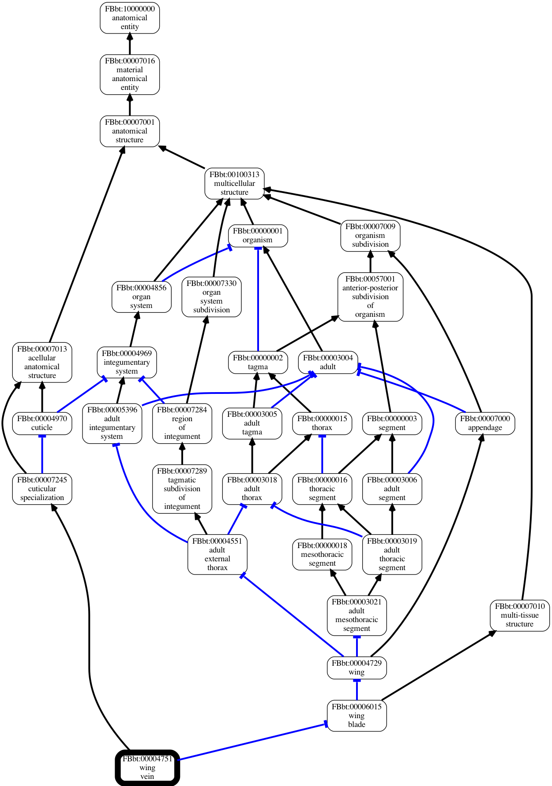

Part 4: OboGraphs
So far we have been using the Basic Ontology Interface which provides basic lookup operations. All methods in this interface return ‘simple’ python objects, such as strings, lists of strings, or dictionaries or Iterators composing these elements.
Sometimes more powerful abstractions are required. For example, many bioinformatics applications work with a Graph level abstraction of an ontology which allows for graph-theoretic operations and visualizations. In contrast, many ontology management and QC applications require an OWL Axiom oriented view of an ontology.
OAK does not favor any one view or abstraction or datamodel. The general philosophy is:
be pluralistic - provide different Interfaces with different abstractions, and allow the application developer or user to choose
ensure each interface follows a well-documented Datamodel, adhering to standards if they exist
To illustrate this we will first introduce the OboGraphInterface which uses the OboGraph datamodel
OboGraphs
In this datamodel, an ontology is conceived of as a Graph, with a graph consisting of
Nodes are typically ontology Classes but are not restricted to this.
Edges are typed relationships between nodes - for example, finger part-of hand.
The OboGraph datamodel is used by the obographviz library, which visualizes graphs like this:
OboGraph Interface
Like most datamodels in OAK, the OboGraph datamodel follows a Data Access Object (DAO) pattern - the objects are intentionally limited in their behavior. For example, you cannot ask a node what edges come out or go in; these are stored at the top level graph object.
“Smarter” operations are provided by the interface
Commands
There are a number of commands that work with OBOGraph abstractions:
Code examples
TODO: see tests for examples for now